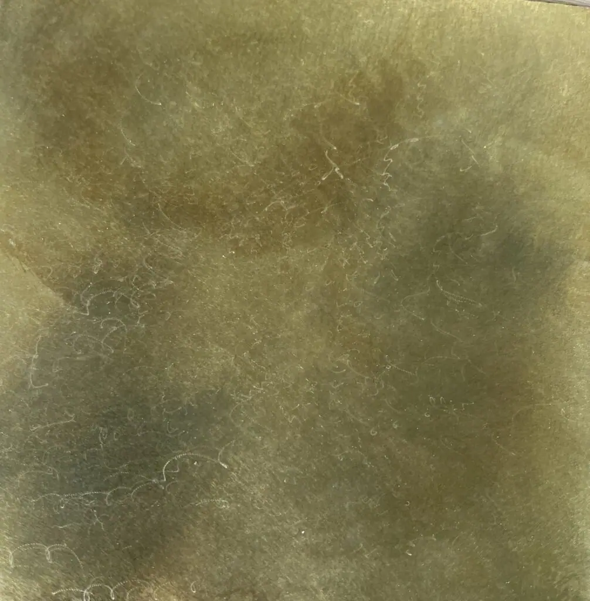

Brass bath panels are beautiful to behold, simple to fit and easy to look after. They also offer a colour and texture few other materials can deliver. All for an amazing price!
Natural brass offers a light, textured finish that would complement any bathroom. Aged brass finishes are available in a selection of textures and patinas and can offer a unique look to any bathroom.
All metal products ordered from Halman Thompson are created by hand, to order.
Complete the quote form for a personalised brass bath panel quotation today!

Cut to size
Each of our bespoke finishes can be purchased in sheets cut to your size, perfect for your project.
- Pricing includes delivery and turnaround time is just 5-8 weeks
- Each piece is coated in a gloss finish lacquer that prevents the sheet from further aging

Ready to go
We can provide bespoke cut metal with each of our finishes being wrapped around wood and lacquer finished. Please get in touch for a bespoke quote .
Hand Crafted Brass Bath Panels
There’s nothing quite like brass to add timeless appeal and genuine character to a room.
Brass bath panels offer a unique opportunity to make a statement, provide contrast to an existing scheme and elevate an otherwise forgotten decorative element.
Brass bath panels are available in a range of finishes:
- Berkshire finish – A timeless, vibrant aged brass finish that offers an almost mystical feel
- Cambridgeshire finish – Brushed aged brass finish that offers light, texture and character
- Somerset finish – Dark and light aged brass finish that reveals something new every time you look
- Wiltshire finish – Speckled aged brass finish with a relaxed and lighthearted appearance
- Natural brass finish – Natural brass finish that is effortlessly timeless and always entertaining
Brass bath panels made to order
Halman Thompson are metal specialists with decades of experience creating amazing metalwork.
All brass bath panels are created by hand by experienced artisans.
You can select the exact shape, size and finish of your bath panel and we’ll handle the rest.
First, we cut a sheet of brass to your exact dimensions using a precision laser. We then prepare the brass for finishing.
Aged brass bath panels will be artificially aged using specialist processes until it reaches the exact look you’re going for. We then seal the metal in tough, transparent lacquer to stop the ageing process and protect the metal.
Natural brass bath panels will be prepared and finished ready for fitting. They can be left as bare metal or optionally protected by the same transparent lacquer.
Once complete, the bath panel should fit perfectly into place, ready to deliver many years of faithful service!
Installing and caring for your brass bath panel
Installation should be simple. If you requested screw holes, we can cut them so your panel fits perfectly. Otherwise, you can use fixings or epoxy resin to fix to a board or directly into place.
Caring for your brass panel is equally simple. Just use warm soapy water and a soft cloth to keep it clean. That’s all you need to do.
No need for specialist solutions or convoluted cleaning processes. It’s as straightforward as it gets!
Complete the quote form for a personalised brass bath panel quotation today!


If you can dream it, we’ll make it.
Bars, balustrades, staircases, worktops, cladding and pieces that don’t have a name yet. Our designers and craftspeople work in brass, copper, zinc and steel, and alongside wood.